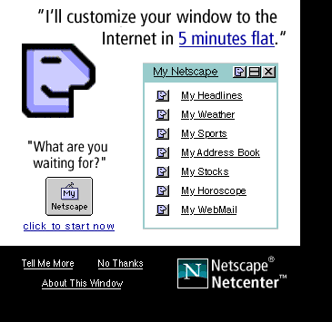
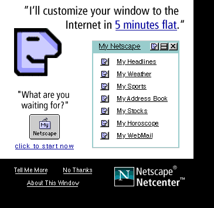

This text should appear between a left justified and right justified image of a raptor.

This text should appear between a left justified and right justified image of a raptor.
Resize the window such that this paragraph is located between the two images. Then
use the form below to change the "clear" attribute of the BR tag that adds a linebreak
between this para and the previous one. Clearing to left should position this para below
the raptor. Clearing to the right or clearing all should position this para below the My
Netscape ad.